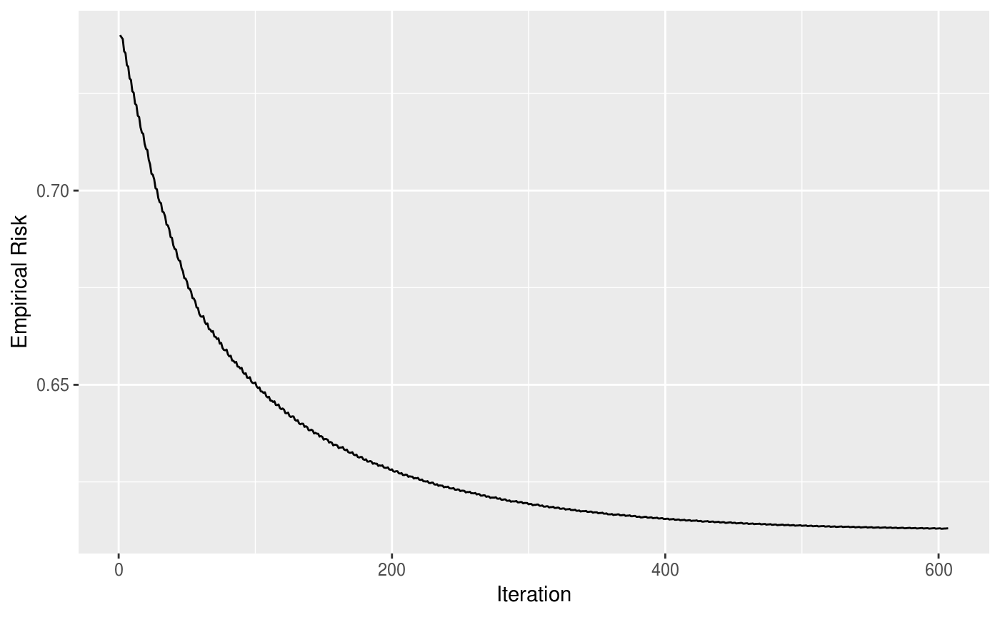
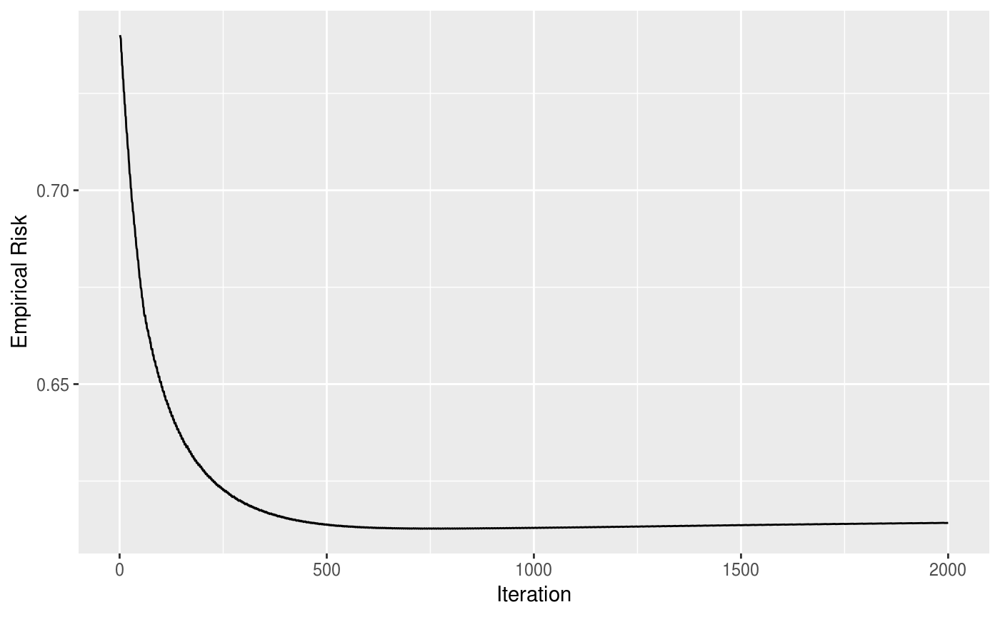
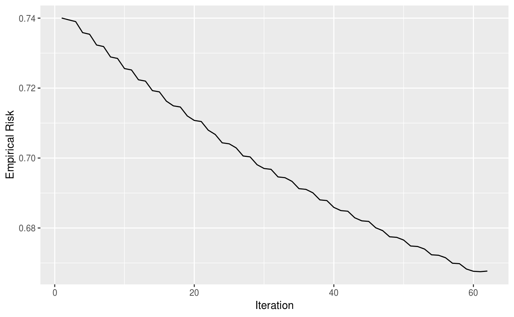

early_stopping.RmdCompboost object using the R6 interfaceWe use the titanic dataset with binary classification on Survived. First of all we store the train and test data into two data frames and remove all rows that contains missing values (NAs):
# Store train and test data:
df = na.omit(titanic::titanic_train)
df$Survived = factor(df$Survived, labels = c("no", "yes"))For the later stopping we split the dataset into train and test:
We define the same model as in the use-case but just on the train index without specifying an out of bag fraction:
The early stopping of compboost is done by using the logger objects. The logger is executed after each iteration and stores class dependent data, e.g. the runtime. Additionally, each logger can be declared as a stopper with use_as_stopper = TRUE. Declaring a logger as stopper, the logged data is used to stop the algorithm after a logger-specific criteria is reached. For example, using LoggerTime as stopper will break the algorithm algorithm after a pre-defined runtime is reached.
Now it is time to define a logger to track the runtime. As mentioned above, we set use_as_stopper = TRUE. Now it matters what is specified in max_time since this defines how long we like to train the model. Here we want to stop after 50000 microseconds:
cboost$addLogger(logger = LoggerTime, use_as_stopper = TRUE, logger_id = "time",
max_time = 50000, time_unit = "microseconds")
cboost$train(2000, trace = 100)
#> 1/2000 risk = 0.73 time = 1
#> 100/2000 risk = 0.66 time = 13487
#> 200/2000 risk = 0.63 time = 27097
#> 300/2000 risk = 0.62 time = 40551
#>
#>
#> Train 367 iterations in 0 Seconds.
#> Final risk based on the train set: 0.62
cboost
#> Component-Wise Gradient Boosting
#>
#> Trained on df[idx_train, ] with target Survived
#> Number of base-learners: 4
#> Learning rate: 0.05
#> Iterations: 367
#> Offset: 0.1933
#>
#> LossBinomial Loss:
#>
#> Loss function: L(y,x) = log(1 + exp(-2yf(x))
#>
#> As we can see, the fittings is stopped after 367 and not after 2000 iterations as specified in train. Taking a look at the logger data, we can see that the last entry exceeds the 50000 microseconds and therefore triggers the stopping criteria:
In machine learning we often like to stop when the best model performance is reached. Especially in boosting, which may tend to overfit, we need either tuning or early stopping to determine what is a good number of iterations \(m\) to get a good model performance. A well-known procedure is to log the out of bag (oob) behavior of the model and stop after this starts to get worse. This is how the oob early stopping is implemented in compboost. The parameter we need to specify are
the loss \(L\) that is used for stopping: \[\mathcal{R}_{\text{emp}}^{[m]} = \frac{1}{n}\sum_{i=1}^n L\left(y^{(i)}, f^{[m]}(x^{(i)})\right)\]
the percentage of performance increase that should be undershot: \[\text{err}^{[m]} = \frac{\mathcal{R}_{\text{emp}}^{[m- 1]} - \mathcal{R}_{\text{emp}}^{[m]}}{\mathcal{R}_{\text{emp}}^{[m - 1]}}\]
Since we are interested in the oob behavior it is necessary to define the oob data and response in a manner that compboost understands it. Therefore, it is possible to use the $prepareResponse() and $prepareData() member functions to create suitable objects:
oob_response = cboost$prepareResponse(df$Survived[idx_test])
oob_data = cboost$prepareData(df[idx_test,])With these objects we can add the oob risk logger, declare it as stopper, and train the model:
cboost$addLogger(logger = LoggerOobRisk, use_as_stopper = TRUE, logger_id = "oob",
used_loss = LossBinomial$new(), eps_for_break = 0, patience = 5, oob_data = oob_data,
oob_response = oob_response)
cboost$train(2000, trace = 100)
#> 1/2000 risk = 0.73 oob = 0.74
#> 100/2000 risk = 0.66 oob = 0.65
#> 200/2000 risk = 0.63 oob = 0.63
#> 300/2000 risk = 0.62 oob = 0.62
#> 400/2000 risk = 0.62 oob = 0.62
#> 500/2000 risk = 0.61 oob = 0.61
#> 600/2000 risk = 0.61 oob = 0.61
#>
#>
#> Train 607 iterations in 0 Seconds.
#> Final risk based on the train set: 0.61Note: The use of eps_for_break = 0 is a hard constrain to continue the training just until the oob risk starts to increase.
Taking a look at the logger data tells us that we stop exactly after the first five differences are bigger than zero (the oob risk of these iterations are bigger than the previous ones):
tail(cboost$getLoggerData(), n = 10)
#> _iterations oob
#> 598 598 0.6129652
#> 599 599 0.6130001
#> 600 600 0.6130251
#> 601 601 0.6130594
#> 602 602 0.6129339
#> 603 603 0.6129594
#> 604 604 0.6129938
#> 605 605 0.6129951
#> 606 606 0.6130281
#> 607 607 0.6130520
diff(tail(cboost$getLoggerData()$oob, n = 10))
#> [1] 3.489823e-05 2.497266e-05 3.426060e-05 -1.254538e-04 2.548293e-05
#> [6] 3.438360e-05 1.304842e-06 3.298777e-05 2.390795e-05library(ggplot2)
ggplot(data = cboost$getLoggerData(), aes(x = `_iterations`, y = oob)) +
geom_line() +
xlab("Iteration") +
ylab("Empirical Risk")
Taking a look at 2000 iterations shows that we have stopped quite good:
cboost$train(2000, trace = 0)
#>
#> You have already trained 607 iterations.
#> Train 1393 additional iterations.
ggplot(data = cboost$getLoggerData(), aes(x = `_iterations`, y = oob)) +
geom_line() +
xlab("Iteration") +
ylab("Empirical Risk")
Note: It could happen that the model’s oob behavior increases locally for a few iterations and then starts to decrease again. To capture this we need the “patience” parameter which waits for, lets say, 5 iterations and breaks just if all 5 iterations fulfill the criteria. Setting this parameter to one can lead to very unstable results:
df = na.omit(titanic::titanic_train)
df$Survived = factor(df$Survived, labels = c("no", "yes"))
set.seed(123)
idx_train = sample(seq_len(nrow(df)), size = nrow(df) * 0.8)
idx_test = setdiff(seq_len(nrow(df)), idx_train)
cboost = Compboost$new(data = df[idx_train, ], target = "Survived", loss = LossBinomial$new())
cboost$addBaselearner("Age", "spline", BaselearnerPSpline)
cboost$addBaselearner("Fare", "spline", BaselearnerPSpline)
cboost$addBaselearner("Sex", "categorical", BaselearnerPolynomial, intercept = FALSE)
oob_response = cboost$prepareResponse(df$Survived[idx_test])
oob_data = cboost$prepareData(df[idx_test,])
cboost$addLogger(logger = LoggerOobRisk, use_as_stopper = TRUE, logger_id = "oob",
used_loss = LossBinomial$new(), eps_for_break = 0, patience = 1, oob_data = oob_data,
oob_response = oob_response)
cboost$train(2000, trace = 0)
#> Train 62 iterations in 0 Seconds.
#> Final risk based on the train set: 0.68
library(ggplot2)
ggplot(data = cboost$getLoggerData(), aes(x = `_iterations`, y = oob)) +
geom_line() +
xlab("Iteration") +
ylab("Empirical Risk")
max_time from the time logger